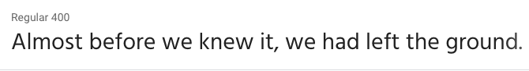
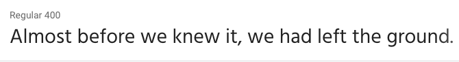

Font Choice
- Site Header
Fjalla One.

- Primary Navigation
Hind. 
- Heading 1
Libre Baskerville.

- Heading 2
Raleway semi-bold.

- Primary Text
Raleway.

The following page is a description of the various elements of typograpy that will be used throughout the site. This will help in keeping the style consistent and in giving a visual contrast of text that is both readable and in accordance with the design.
Fjalla One.
Hind. 
Libre Baskerville.
Raleway semi-bold.
Raleway.